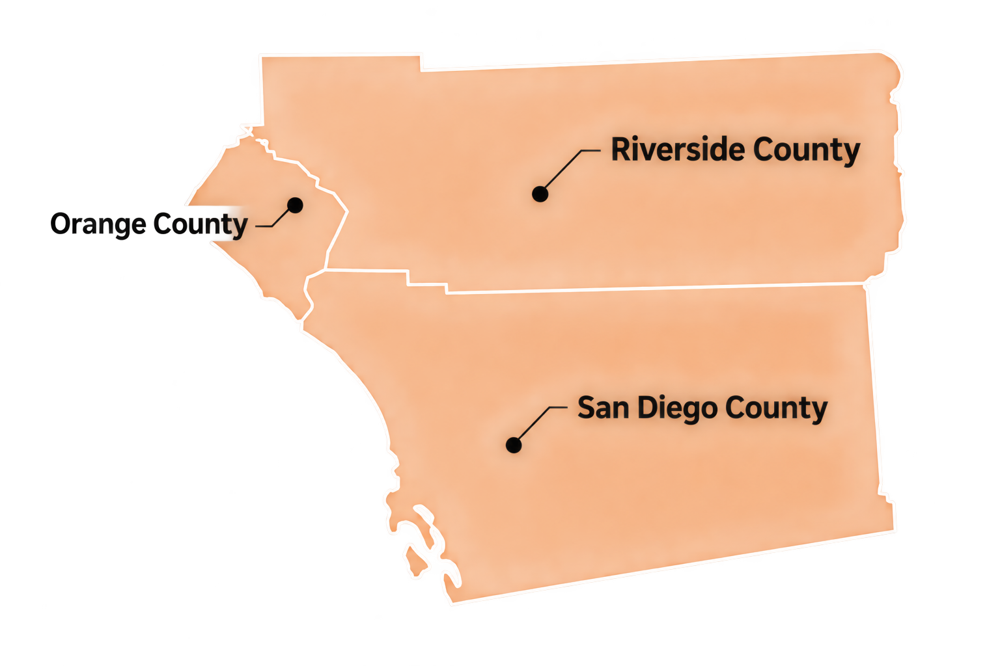

Reduce Risk
Find developing issues before they become downtime, failures, or warranty disputes.
THERMAL INSPECTIONS FOR COMMISSIONING & MAINTENANCE
ThermaVista provides thermal drone inspections and ground-based thermography for solar PV and electrical systems. We help owners, EPCs, and maintenance teams detect anomalies early, verify new installations, and support reliable asset performance.
Find developing issues before they become downtime, failures, or warranty disputes.
Support commissioning and acceptance with documented thermal findings.
Identify PV and electrical anomalies that may impact output, safety, or reliability.
Build a repeatable maintenance record to support long-term asset decisions.
Based in San Diego North County, ThermaVista is centrally located to readily serve San Diego, Orange, and Riverside Counties.
OUR SERVICES
From commissioning new systems to monitoring assets already in service, ThermaVista provides thermal inspection services designed to surface issues before they affect safety, reliability, or production.
Drone-based and targeted ground-based thermography for commercial and utility photovoltaic systems, including modules, strings, combiners, inverters, and BOS equipment.
Learn MoreInfrared inspection of electrical equipment such as switchgear, panelboards, disconnects, transformers, inverters, and terminations to identify abnormal heating.
Learn MoreVerify new installations, support punch-list development, and establish a baseline thermal condition before final turnover and long-term operation.
Learn MorePeriodic inspections help asset owners detect developing conditions early, track changes over time, and prioritize maintenance resources intelligently.
Learn MoreWHY THERMAL INSPECTION
Many electrical and photovoltaic defects appear ordinary in visible light while showing meaningful thermal signatures under operating conditions.
A PV module may look normal in visible light while the thermal image reveals a hotspot consistent with a developing defect such as a cell issue, connection problem, or other abnormal operating condition.
VALUE ADD
Identify abnormal heating before it leads to major equipment failure, service interruption, or expensive emergency repair.
New systems can energize and still contain issues. Thermal inspection helps verify installation quality under operating conditions.
Documented findings help maintenance teams focus effort on the components most likely to need follow-up.
Thermal anomalies can indicate module, string, or connection issues that may quietly reduce energy production.
Paired thermal and visual evidence helps create a defensible record of asset condition during commissioning and maintenance.
Repeat inspections create trend data that can help reveal deterioration over time rather than relying on guesswork.
STANDARDS-ALIGNED INSPECTIONS
ThermaVista performs thermal inspections using structured methods informed by recognized photovoltaic and electrical inspection guidelines.
A technical specification addressing outdoor infrared thermography of operating PV modules and plants, including procedures, reporting, environmental considerations, equipment, and evaluation of thermal abnormalities.
Commissioning guidance for newly installed and retrofitted electrical systems, supporting verification that systems satisfy project requirements.
Acceptance testing guidance for verifying equipment condition and installation prior to final acceptance and operation.
Maintenance testing guidance for electrical equipment already in service, helping assess condition, suitability, and reliability over time.
OUR PROCESS
ThermaVista’s process is designed to move from field data collection to clear, organized, useful reporting—because a thermogram is only valuable if it leads to action.
Review drawings, asset information, site access, and inspection scope.
Confirm operating and environmental conditions suitable for inspection.
Collect thermal and visual imagery using drone and/or handheld equipment.
Evaluate thermal patterns, temperature differences, and probable anomalies.
Document findings with paired imagery, location, severity, and notes.
Help clients prioritize further investigation, repair, or trending over time.
DELIVERABLES
A professional thermal inspection should end with documentation that is useful, not decorative. ThermaVista reports are designed to help decision-makers act.
LOCAL EXPERTISE
ThermaVista is based in North County and provides thermal inspection services throughout the Southern California region.

READY TO TALK?
Whether you need commissioning support for a new installation or periodic thermal maintenance for an operating system, ThermaVista can help.